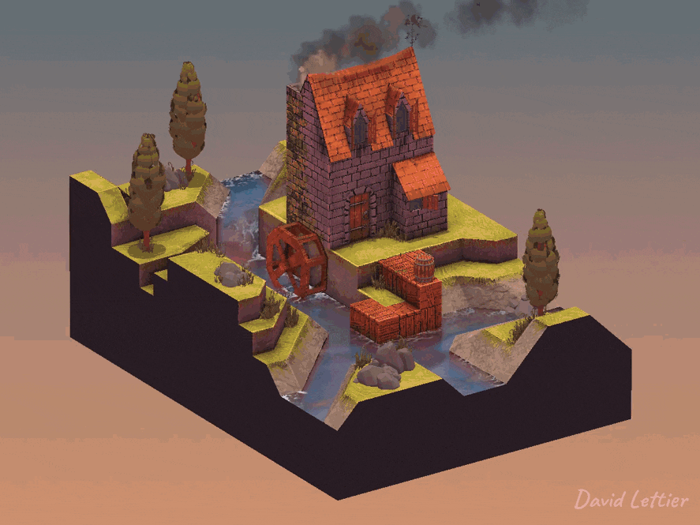
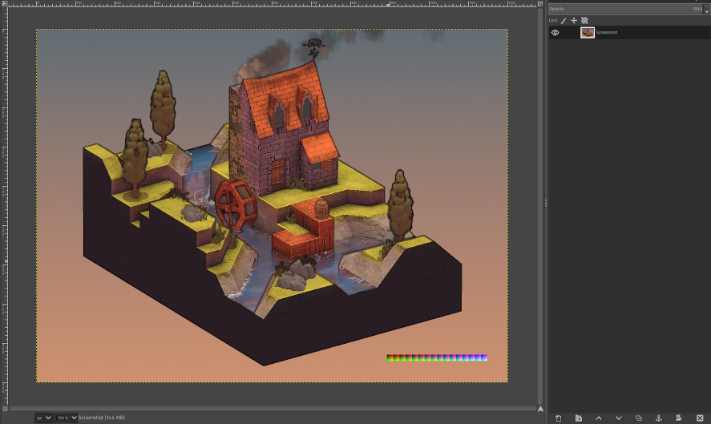
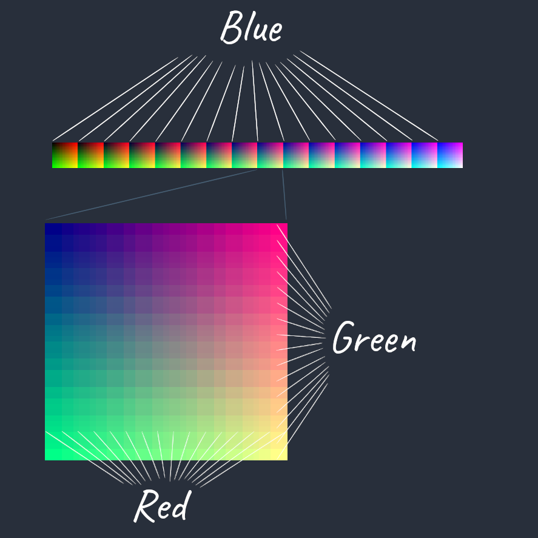
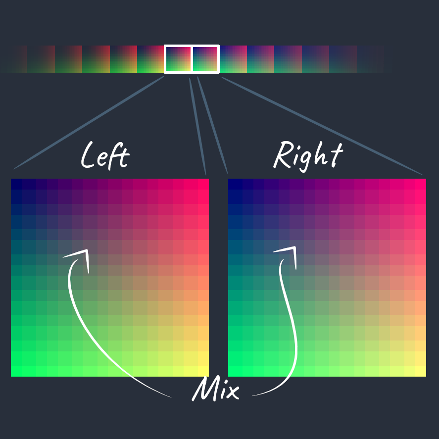

查找表或 LUT 着色器允许您使用图像编辑器（如 GIMP）转换游戏的颜色。从颜色分级到将白天变成黑夜，LUT 着色器是调整游戏外观的便捷工具。
在开始之前，您需要找到一个中性 LUT 图像。Neutral 表示它保持片段颜色不变。LUT 需要为 256 像素宽 x 16 像素高，包含 16 个块，每个块为 16 x 16 像素。
LUT 被映射为 16 个块。每个块都有不同级别的蓝色。当您在块中从左向右移动时，蓝色的数量会增加。您可以在每个块的左上角看到蓝色的数量。在每个块中，红色的数量会随着您从左向右移动而增加，绿色的数量会随着您从上到下移动而增加。第一个块的左上角是黑色的，因为每个 RGB 通道都是零。最后一个块的右下角是白色的，因为每个 RGB 通道都是 1。

拿到中性 LUT，截取游戏的屏幕截图并在图像编辑器中打开它。将中性 LUT 添加为新图层并将其与屏幕截图合并。当您操作屏幕截图的颜色时，LUT 将以相同的方式更改。完成编辑后，仅选择 LUT 并将其另存为新图像。现在，您有了新的查找表，可以开始编写着色器了。
// ...
vec2 texSize = textureSize(colorTexture, 0).xy;
vec4 color = texture(colorTexture, gl_FragCoord.xy / texSize);
// ...LUT 着色器是一种屏幕空间技术。因此，请在当前片段或屏幕位置对场景的颜色进行采样。
// ...
float u = floor(color.b * 15.0) / 15.0 * 240.0;
u = (floor(color.r * 15.0) / 15.0 * 15.0) + u;
u /= 255.0;
float v = ceil(color.g * 15.0);
v /= 15.0;
v = 1.0 - v;
// ...为了使用 LUT 变换当前片段的颜色，您需要将颜色映射到查找表纹理上的两个 UV 坐标。第一个映射（如上所示）是到最近的左边界或下边界块位置，第二个映射（如下所示）是到最近的右边界或上限块映射。最后，您将组合这两个映射以创建最终的颜色变换。

红色、绿色和蓝色通道中的每一个都映射到 LUT 中的 16 种可能性之一。蓝色通道映射到左上角 16 个块的角之一。在蓝色通道映射到块后，红色通道映射到块内的 16 个水平像素位置之一，绿色通道映射到块内 16 个垂直像素位置之一。这三个映射将确定从 LUT 中对颜色进行采样所需的 UV 坐标。
要计算最终的 U 坐标，请将其除以 255，因为 LUT 的宽度为 256 像素，而 U 的范围是从 0 到 1。要计算最终的 V 坐标，请将其除以 15，因为 LUT 高度为 16 像素，V 范围为 0 到 1。您还需要从 1 中减去归一化的 V 坐标，因为 V 的范围从底部的 0 到顶部的 1，而绿色通道的范围从顶部的 0 到底部的 15。
使用 UV 坐标，从查找表中对颜色进行采样。这是最接近的左侧块颜色。
// ...
u = ceil(color.b * 15.0) / 15.0 * 240.0;
u = (ceil(color.r * 15.0) / 15.0 * 15.0) + u;
u /= 255.0;
v = 1.0 - (ceil(color.g * 15.0) / 15.0);
vec3 right = texture(lookupTableTexture, vec2(u, v)).rgb;
// ...现在你需要计算最近的右块颜色的 UV 坐标。请注意现在如何使用 or ceiling 而不是 。ceilfloor

// ...
color.r = mix(left.r, right.r, fract(color.r * 15.0));
color.g = mix(left.g, right.g, fract(color.g * 15.0));
color.b = mix(left.b, right.b, fract(color.b * 15.0));
// ...并非每个通道都能完美地映射到其 16 种可能性之一。例如，映射不完美。在下限 （） 处，它映射到 上界 （），在上限 （） 处，它映射到 。将 it 与 where maps to at lower boundary 和 upper bound进行比较。对于那些映射不完美的通道，您需要根据通道位于其下限和上限之间的位置来混合左侧和右侧。对于 ，它直接落在它们之间，使最终颜色成为一半左和一半右的混合。然而，对于混合物来说，98% 是右的，2% 的左是，因为时间的小数部分是 。0.5floor0.4666666666666667ceil0.53333333333333330.40.40.40.50.1320.12315.00.98
将片段颜色设置为最终混合，您就完成了。
（C） 2020 大卫·莱蒂尔
lettier.com